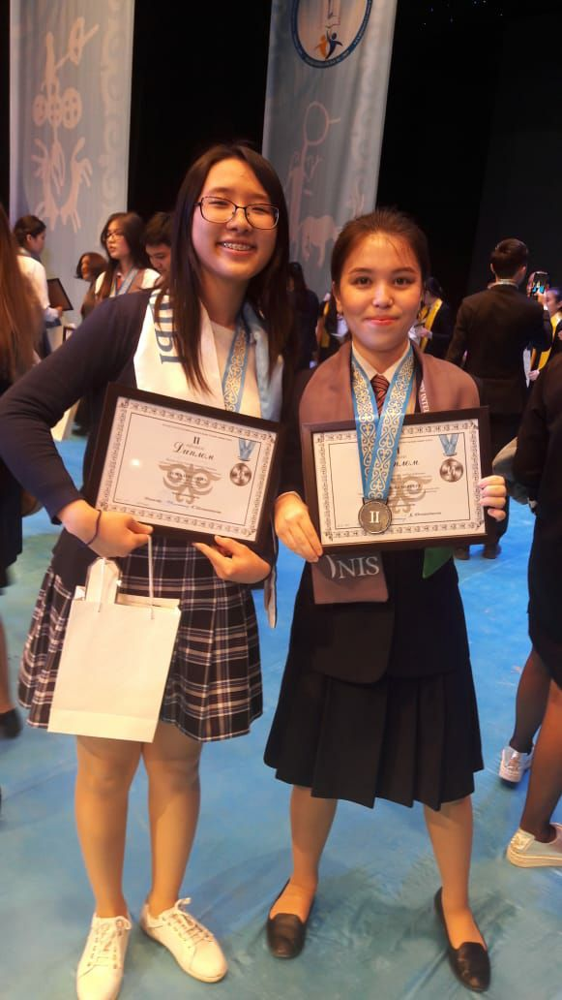

Hello! Nice to meet you! My name is Alexandra.
I am from Kazakhstan. It's a wonderful country located just below Russia. I live in Nur-Sultan, the capital, which is famous for its extreme continential climate with the temperature in winter occasionally reaching -30°C. Nur-Sultan is a new, rapidly developing city which lies right in the heart of Kazakhstan's steppes.
I love badminton. There was almost no wind in the city I grew up in. So it was pretty easy to play badminton outside in summer. Badminton is the favourite sport of my grandmother and she is the one who cultivated the love for it in me.
I also like cooking very much. I enjoy trying different recipes and making people I love happy.
And I am very fond of reading books and analyzing them. I fell deeply in love with Literature at school. My teacher was a professional. She knew how to spark the interest in every student. Since Kazakhstan was a part of Soviet Union once, Russian culture plays a significant role here, which is why students are taught Russian literature at school.
One of my teacher's methods was to organize the debate in class and have the students divided into groups of those who criticized the actions of a character and those who defended. Students provided arguments, and thus were encouraged to read the novel in advance to be able to prove their points.
Among other events we had "Poetry Evenings" dedicated to a particular author. On this evenings everyone had an opportunity to recite a poem he or she liked the most among those that were written by that author.
And my teacher also trained me for essays competetions held every year in high school. In those essays we analyzed the ideas expressed by authors in their novels. In the 11th grade I participated in the essay competition of the republic level and took the 2nd place. Here I am with my friend who got the same score as I did.
